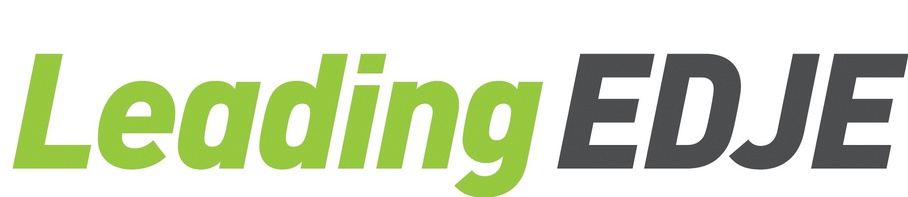
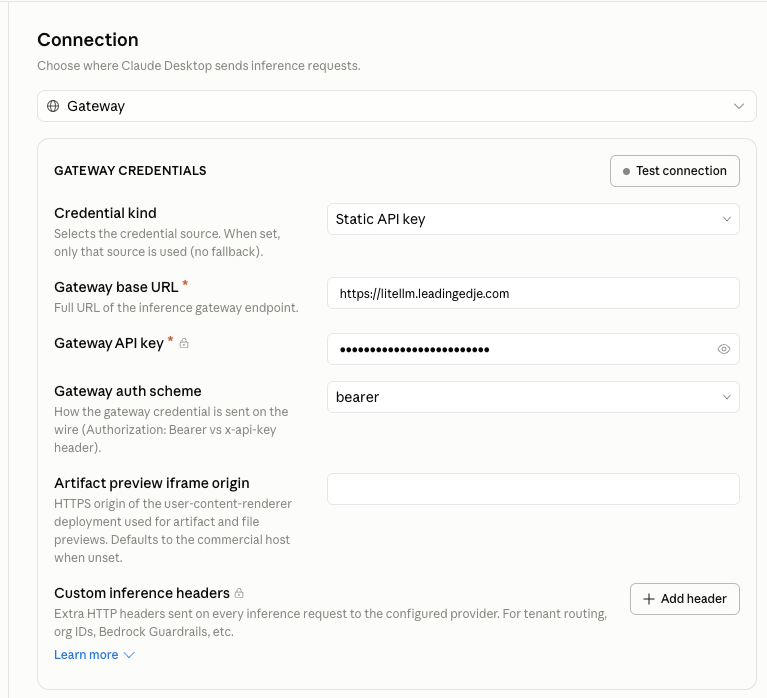
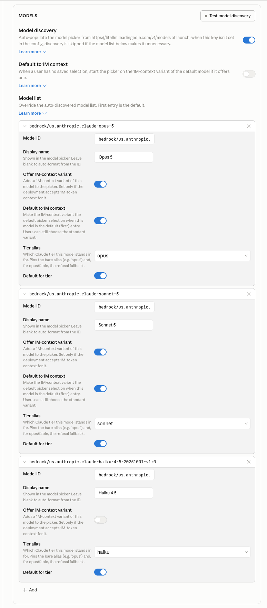

LiteLLM Training Dashboard Back to repositoryClaude setup
Set up all three — your terminal, the VS Code extension, and Claude Desktop. A few minutes each, once per machine.
You need Claude Code installed and a LiteLLM key from your instructor. Your key starts with sk-.
Requires Node.js 18 or newer. Skip this if claude already runs.
npm install -g @anthropic-ai/claude-codeYour platform is selected below.
Open your shell config
open -e ~/.zshrcPaste this at the bottom, then save
Put your own key on the second line.
export ANTHROPIC_BASE_URL=https://litellm.leadingedje.com
export ANTHROPIC_API_KEY=sk-PASTE-YOUR-KEY-HERE
export ANTHROPIC_DEFAULT_OPUS_MODEL=bedrock/us.anthropic.claude-opus-5
export ANTHROPIC_DEFAULT_SONNET_MODEL=bedrock/us.anthropic.claude-sonnet-5
export ANTHROPIC_DEFAULT_HAIKU_MODEL=bedrock/us.anthropic.claude-haiku-4-5-20251001-v1:0
export ANTHROPIC_SMALL_FAST_MODEL=bedrock/us.anthropic.claude-haiku-4-5-20251001-v1:0Reload and run it
source ~/.zshrc
claudeOpen your PowerShell profile
The first line creates it if you don't have one yet.
if (!(Test-Path $PROFILE)) { New-Item -ItemType File -Path $PROFILE -Force }
notepad $PROFILEPaste this at the bottom, then save
Put your own key on the second line.
$env:ANTHROPIC_BASE_URL = "https://litellm.leadingedje.com"
$env:ANTHROPIC_API_KEY = "sk-PASTE-YOUR-KEY-HERE"
$env:ANTHROPIC_DEFAULT_OPUS_MODEL = "bedrock/us.anthropic.claude-opus-5"
$env:ANTHROPIC_DEFAULT_SONNET_MODEL = "bedrock/us.anthropic.claude-sonnet-5"
$env:ANTHROPIC_DEFAULT_HAIKU_MODEL = "bedrock/us.anthropic.claude-haiku-4-5-20251001-v1:0"
$env:ANTHROPIC_SMALL_FAST_MODEL = "bedrock/us.anthropic.claude-haiku-4-5-20251001-v1:0"Reload and run it
. $PROFILE
claudeIf PowerShell blocks your profile
You'll see a script-execution error on step 3. Run Set-ExecutionPolicy -Scope CurrentUser RemoteSigned, answer yes, then try again.
Open your shell config
If you use zsh instead of bash, edit ~/.zshrc.
nano ~/.bashrcPaste this at the bottom, then save
Put your own key on the second line.
export ANTHROPIC_BASE_URL=https://litellm.leadingedje.com
export ANTHROPIC_API_KEY=sk-PASTE-YOUR-KEY-HERE
export ANTHROPIC_DEFAULT_OPUS_MODEL=bedrock/us.anthropic.claude-opus-5
export ANTHROPIC_DEFAULT_SONNET_MODEL=bedrock/us.anthropic.claude-sonnet-5
export ANTHROPIC_DEFAULT_HAIKU_MODEL=bedrock/us.anthropic.claude-haiku-4-5-20251001-v1:0
export ANTHROPIC_SMALL_FAST_MODEL=bedrock/us.anthropic.claude-haiku-4-5-20251001-v1:0Reload and run it
source ~/.bashrc
claudeThe Claude Code extension doesn't read your shell config, so give it the same settings inside VS Code. Same steps on every platform.
Open your VS Code settings file
Press Ctrl+Shift+P (Cmd+Shift+P on Mac) and run Preferences: Open User Settings (JSON).
Paste this inside the outermost braces, then save
Put your own key on the second line. If there's a setting above it, end that line with a comma.
"claudeCode.environmentVariables": [
{ "name": "ANTHROPIC_BASE_URL", "value": "https://litellm.leadingedje.com" },
{ "name": "ANTHROPIC_AUTH_TOKEN", "value": "sk-PASTE-YOUR-KEY-HERE" },
{ "name": "ANTHROPIC_DEFAULT_OPUS_MODEL", "value": "bedrock/us.anthropic.claude-opus-5" },
{ "name": "ANTHROPIC_DEFAULT_SONNET_MODEL", "value": "bedrock/us.anthropic.claude-sonnet-5" },
{ "name": "ANTHROPIC_DEFAULT_HAIKU_MODEL", "value": "bedrock/us.anthropic.claude-haiku-4-5-20251001-v1:0" },
{ "name": "ANTHROPIC_SMALL_FAST_MODEL", "value": "bedrock/us.anthropic.claude-haiku-4-5-20251001-v1:0" }
]Restart VS Code and open Claude
Click the Claude icon in the sidebar and send a message. No sign-in needed — your key is the login.
Claude Desktop (macOS and Windows) runs entirely on your training key — no Claude account needed. Don't sign in; configure the gateway instead.
Install it and turn on Developer Mode
Get Claude Desktop from claude.ai/download. Open it but don't sign in. From the menu choose Help → Troubleshooting → Enable Developer Mode. The app restarts with a Developer menu.
Configure the connection
Open Developer → Configure Third-Party Inference. In the Connection section, choose Gateway and fill in the credentials so it matches this:

Credential kind: Static API key
Gateway base URL: https://litellm.leadingedje.com
Gateway API key: sk-PASTE-YOUR-KEY-HERE
Gateway auth scheme: bearerLeave the other fields empty, then click Test connection to confirm your key works.
Add the three models
In the Models section, use + Add once per model. The Model ID is the part that matters — add these three, in this order (the first is the default):
bedrock/us.anthropic.claude-opus-5
bedrock/us.anthropic.claude-sonnet-5
bedrock/us.anthropic.claude-haiku-4-5-20251001-v1:0For each one, pick the matching tier alias (opus, sonnet, haiku) and a display name if you like. On Opus and Sonnet you can also turn on Offer 1M-context variant — leave it off for Haiku, which tops out at 200K.

Relaunch and start working
Apply the configuration locally. When the app restarts, choose the third-party option on the start screen instead of signing in. Pick a model and go.
The model names were changed. Keep the bedrock/... names exactly as written above.
Your shell hasn't picked up the change. Close the terminal, open a fresh one, and try again.
Still stuck? You probably edited a file your shell doesn't read. On macOS confirm it's ~/.zshrc; on Linux, ~/.bashrc.
Treat your key like a password
It sits in plain text in your shell config. Don't commit it, don't paste it into a ticket or chat, and ask your instructor for a fresh one if it ever gets shared.